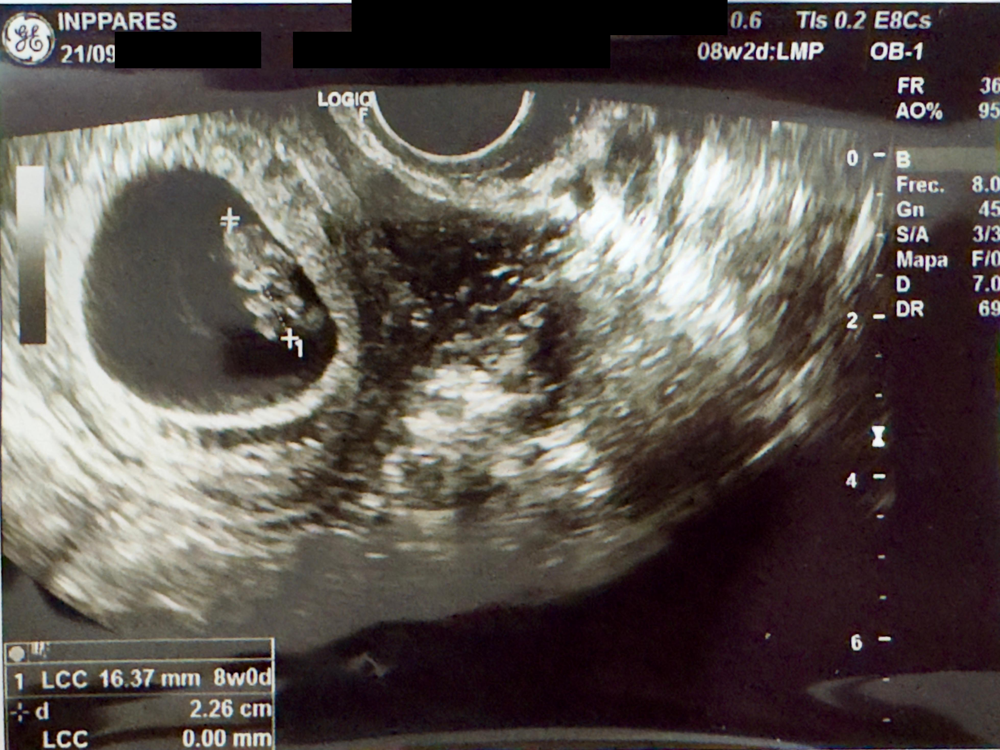

Nuestro primer encuentroEl primer latido
La primera vez que te escuchamos
Un instante pequeño y eterno. Por primera vez escuchamos el ritmo que ya estaba cambiando nuestras vidas.
Sonido original
Sus primeros latidos
168BPM
Audio listo para reproducir.